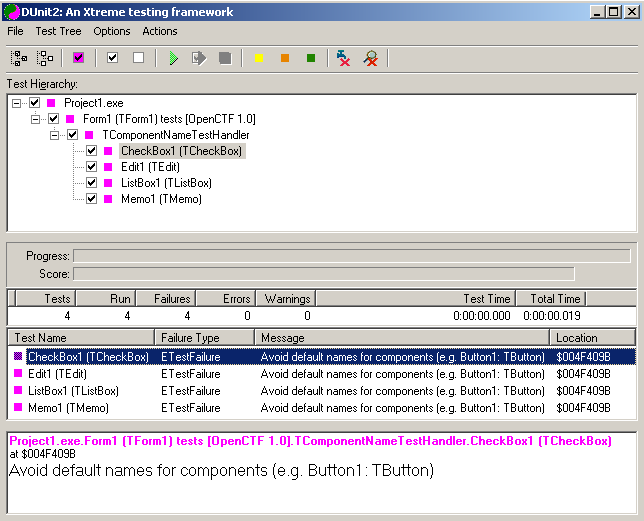
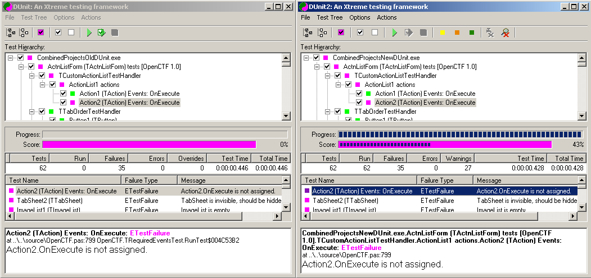
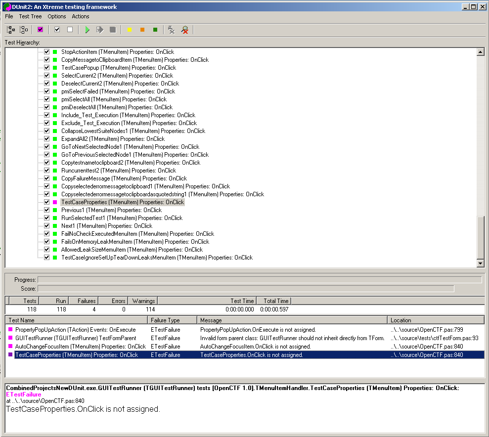
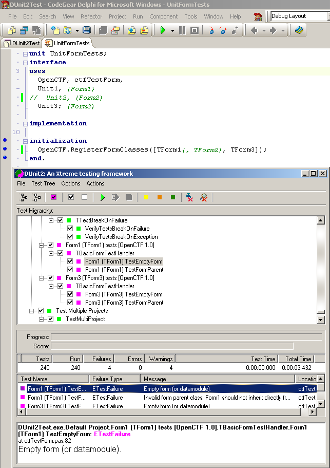

Dunit2 --- OpenCTF execution results
Integration work with Dunit2 is still in progress (23rd Feb
2008)
Executing Example Names project. Note. All tests are supposed to
fail.

XML report from project execution.
The screenshot below shows the results of combining most of the
examples into one test suite, compiling and building under older
dunit 9.3 and Dunit2.

Notes. Dunit 9.3 vs New Dunit2
- When compiled with dunit V9.3 there are some
deficiencies
- It currently does not report the executed test count, the
progress% or the %passed score.
- Dunit2 is working OK and also reporting the whole path for
failed tests.
- Self testing GUITestRunner goes well (4 errors) until
shutdown, then all hell breaks loose, which might be
expected

Combining OpenCTF testing with regular unit test code is very
simple. The screenshot below show one of the example projects
wrapped into a unit test and executed in DUnit2's own unit
test suite.


Page last updated 5th Mar
2008